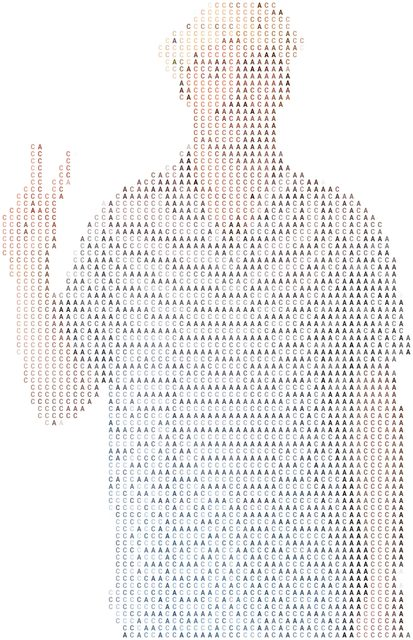

Open to entry-level roles for 2027
Hi, I'm Aidan, a product designer who turns complex systems into elegant, approachable experiences.
I study Information Science at CU Boulder, with a minor in Computer Science. Previously, I interned at Concentrix, building an internal meeting tool now used by 250+ people. Off-screen: free diving, baking, snowboarding.
selected work (2)
imin
Group trip and event planning for college friends. AI turns a wall-of-text group chat into one plan everyone can say "I'm in" to.
view project
Air Force ROTC information ecosystem
Interviews and artifact analysis mapping how information reaches cadets across 4 platforms and ~20 flights, and where it breaks down.
view project